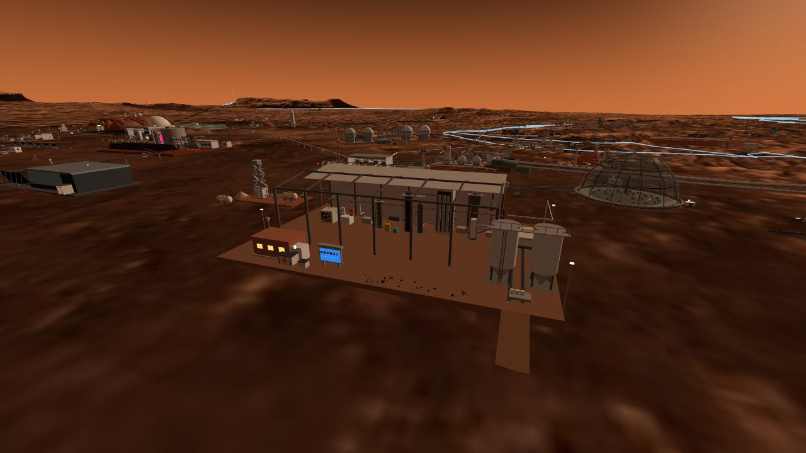
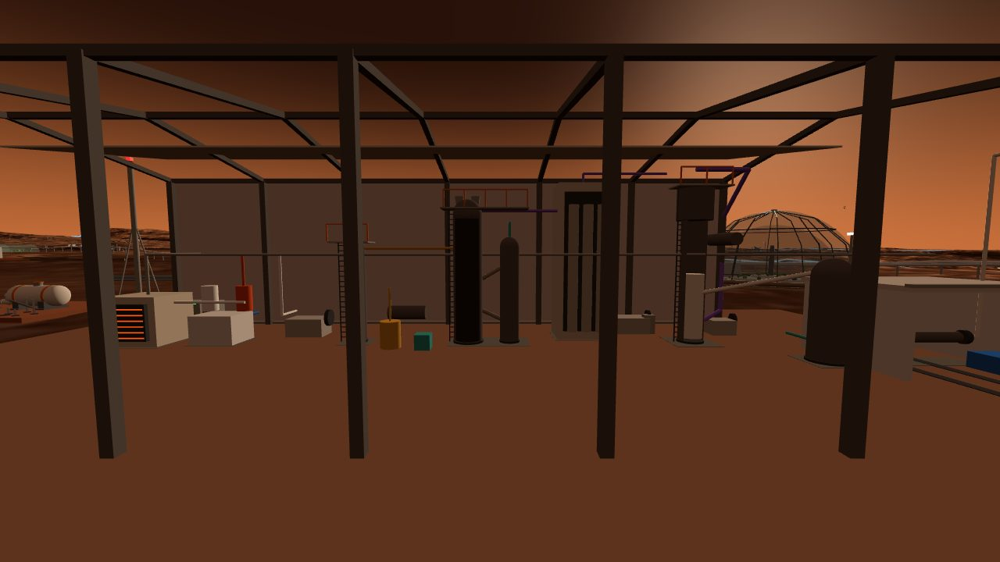

This city had no plastic. The village's radiation liner was booked as 101 tonnes of imported polyethylene, the appliance housings are printed from filament pyrolysed out of imported packaging, and every card that needed a polymer wrote "import". Five ledgers ask whether carbon dioxide and hydrogen can become polyethylene here, and what it costs. The answer is yes, and the cost is not electricity. It is water: the well caps the line at 50 kg a sol, and the choice of route was made by which chemistry does not throw hydrogen away.
One line, outside, that turns the atmosphere and well water into pellets - and makes more oxygen than the sulfur plant.
The plant stands under an unpressurised dust shed north-east of the oxygen station, next to the well and the CO₂ intake tower it feeds from. Along the shed, west to east: a solid-oxide electrolysis stack that splits CO₂ into CO and oxygen, a water electrolyser, a methanol converter cast in ductile iron at 20 bar, a fluidised bed of SAPO-34 catalyst at 450 °C lined with cast stone, a cold box of three imported steel columns at −100 °C, a gas-phase polymerisation reactor, a CO₂-purged degasser, an extruder, and two sulfur-concrete silos. Behind the shed, 108 m² of radiators. In front, the only pressurised volume on the site: a printed-regolith control room, its air intake thirty metres from anything carrying CO or methanol.
Every number on the plant traces to one of five ledgers in the dossier mars-polymer/ledger/, and the expectations for every ledger were written down and committed before the first script ran (mars-polymer 12d349b). Eighty-two of those expectations were scored afterwards: 63 hit, 19 missed. The misses are the interesting part; they are in section 04.
Two things the ledgers found were not about chemistry. The premise that the appliance line imports 1.06 t of plastic is not what the home ledger says: its 1,064 kg of imports contain no plastic at all, and the 278 kg of plastic parts are booked to recycled filament - whose feedstock is imported packaging. And the three cards that hold the well's water disagree by a factor of five on what the propellant plant draws, which is the single number that decides whether this line makes 50 or 100 kg a sol.


Five ledgers, in the order in which a wrong answer would change the geometry.
Methanol-to-olefins, not Fischer-Tropsch, not oxidative coupling. All three routes share the same net reaction, CO₂ + H₂O → −CH₂− + 1.5 O₂ at 649 kJ/mol; they differ only in selectivity and recycle. Iron Fischer-Tropsch puts 9 % of the CO fed into ethylene (ASF α 0.5, C₂ olefinicity 0.6, 40 % of the CO lost to CO₂ by water-gas shift) and the other 91 % into a C₁–C₅₊ slate that needs a cracker's cold train and has no sink in the city. Oxidative coupling burns the MAV's methane at an 18 % per-pass C₂ yield and cycles its hydrogen through the electrolyser twice. MTO puts 42 % of the carbon into ethylene and 38 % into propylene with a two-step chain of mature reactors. With co-products credited at zero, a kilogram of ethylene costs 63 kWh by MTO, 292 by FT and 316 by OCM - the last two land on the foundry's 298 kWh/kg make-or-import line and the first does not. FT's catalyst, iron-sodium-sulfur on silica, is the only one that is entirely local; it is kept as the fallback if the MTO imports stop.
Per tonne of PE at 100 % selectivity: 3.14 t CO₂, 1.28 t of well water, 143 kg of hydrogen, and 3.43 t of oxygen out. The whole MTO train, with propylene uncredited, draws 7.3 t of CO₂ and 3.0 t of water per tonne of PE and returns 8.0 t of oxygen. Electricity: the practical electrolysis floor is 23.1 kWh per kg of −CH₂− with PEM stacks and 18.3 with high-temperature SOEC on the fusion heat loop, against a thermodynamic floor of 12.9 (the heating value of polyethylene); the pre-registration had written 13–15 and forgot that the water recovered from methanol synthesis and MTO must be electrolysed again. With process adders the line costs 22–27 kWh per kg of olefin, 52–64 per kg of PE if the propylene pays nothing. Heat rejected at 50 kg/sol: 56 kW into 108 m² of radiator, since 600 Pa of CO₂ has no convection to offer.
Fifty kilograms a sol, set by the well. The nameplate rule was registered before the numbers: the largest of 50, 100 or 200 kg/sol whose water fits the well's unallocated share and whose mean power stays under 10 % of the city peak. On the well card's own allocation (193 L/sol to the propellant plant) 157 L/sol is unallocated; 50 kg/sol of PE needs 151 with the propylene vented, 100 needs 303. The power convention happens to give the same answer, with 1 % to spare on SOEC and no candidate at all on PEM - and a ±30 % perturbation on energy removes the 50, which is exactly what the registered ablation gate was written to detect. The demand table: the village liner at 101 t (village area basis) or 177.7 t (Run D's as-built basis), conditional on a lever nobody has established; 278 kg of appliance plastic; 735–1,380 t if PE ever replaced Run C's water in the berm; 2–6 t of cable insulation nobody has registered. Steady demand is under 30 kg/sol, so this is a campaign line. At 50 kg/sol the 101 t liner takes 2,020 sol - 2.7 rendezvous windows - after commissioning.
No ethylene inside any pressurised volume; the plant lives outside. Ethylene's minimum ignition energy is 0.07 mJ, hydrogen's class; 1.74 kg fills one 78 m³ village corridor to its lower flammability limit; a deflagration in the city's 30.1 %-oxygen-equivalent cabin gas loads the 70 kPa hull eleven times over. Outside, in 600 Pa of CO₂, the oxygen is 62 times below ethylene's limiting concentration and the quenching distance is 21 cm: a leak cannot burn. PE powder is an St1 dust, so pelletising stays outside too, and the degasser purges with CO₂ at 0.15 kWh/kg rather than buffer gas at 5.27. By-products at 50 kg PE/sol: 45 kg of propylene with three sinks printed and none chosen, 2.7 kg of methane to the propellant tanks, coke burnt and returned as CO₂, 153 kg of water back to the electrolyser, and 400 kg of oxygen - twice the sulfur plant - to the cryogenic farm.
24 items, 233 t, of which 10 t come from Earth. A single declared limit - ductile iron pressure parts to 24 bar and 343 °C, not below −20 °C - judges every vessel. The methanol converter passes at 20 bar because account 1 gives 22 % per-pass conversion there (the rule asked for 15 %); the MTO bed passes because a cast-stone lining keeps its iron shell under 300 °C, the glass plant's furnace-wall method; the polymerisation reactor passes at 20 bar and 90 °C. What is imported is the foundry's own "0 % local" list - compressors, bearings, seals, electronics, filters - plus three classes of this line's own: catalysts, cryogenic steel, electrolysis stacks. Under the foundry's rule, PE at 52 kWh/kg is a make with 5.7× to spare. Most of the local mass is not machinery: 96 t of printed silos, 77 t of sulfur-concrete footings, and a platform graded out of a site that falls 1.48 m across the footprint - 330 m³ cut and refilled on site, where an all-fill pad would have been 2.9 kt, 3,426 sol of the mine's spare haulage.
Every headline number on this page, the state it is in, and the script that produced it. Scripts live in the dossier mars-polymer/ledger/ and write mars-polymer/out/; the pre-registration is the dossier's first commit; the five ledgers are commit 358d389.
| Claim | Value | State | Produced by |
|---|---|---|---|
| Route chosen | MTO, variant 2a (SOXE CO + 2 H₂) | account · rule registered before data | mars-polymer/ledger/01_routes.py |
| Electrolysis floor, practical / thermodynamic | 23.1 PEM · 18.3 SOEC / 12.9 kWh/kg −CH₂− | account · miss vs 13–15 pre-registered | 01_routes.py |
| Per kg ethylene, co-products at zero / paying their own | MTO 63 / 31 · FT 292 / 59 · OCM 316 / 55 kWh | account · selectivities declared | 01_routes.py |
| Methanol equilibrium conversion at 250 °C | 53 % at 50 bar · 22 % at 20 bar | account · K(500 K) in the JANAF band | 01_routes.py · thermo.py |
| FT ethylene as a share of CO fed | 9 % | account · ASF α 0.5 declared | 01_routes.py |
| OCM per-pass C₂ yield | 18 % | declared band · gate ≤ 30 % | 01_routes.py |
| MTO catalyst import at 100 kg PE/sol | 107 kg / window | declared productivities and lifetimes | 01_routes.py |
| Per tonne PE, 100 % selectivity | CO₂ 3.14 · H₂O 1.28 · H₂ 0.143 · O₂ 3.43 t | account · identities | 02_mass_energy.py |
| Whole train per tonne PE, propylene uncredited | CO₂ 7.32 · H₂O 3.03 · O₂ 8.01 t | account · C/H/O balance 1e-9 | 02_mass_energy.py |
| Electricity per kg PE, olefin / PE-only basis | 27.2 / 63.8 PEM · 22.4 / 52.5 SOEC kWh | account · process adders declared | 02_mass_energy.py |
| Margin to the foundry's 298 kWh/kg | 5.7× | cited threshold · res-foundry-01 account 14 | 02_mass_energy.py |
| Well water unallocated, three readings | 157 / 310 / 310 L/sol | declared gap · cards disagree 5× | 02_mass_energy.py · DISPATCH water_readings |
| ISRU water make-up by its own card | 39 kg/sol | account · 2.9 kg/h × 45 % recovery | 02_mass_energy.py |
| Oxygen co-product at 50 kg PE/sol | 400 kg/sol | account · two paths agree 0.1 % | 02_mass_energy.py |
| Heat rejection / radiator at 50 kg PE/sol | 56 kW / 108 m² | account · miss vs 20–40 kW | 02_mass_energy.py |
| Appliance plastic in the 91-unit fleet | 278 kg, none imported | account · reproduces home 2,803 / 1,064.4 | 03_demand_nameplate.py |
| Village liner demand | 101 t / 177.7 t | conditional · both bases printed | 03_demand_nameplate.py |
| Berm shielding at equal hydrogen to Run C water | 735 / 1,380 t | conditional · no geometry run | 03_demand_nameplate.py |
| Nameplate | 50 kg PE/sol | account · G3.3 red by its own registration | 03_demand_nameplate.py |
| Liner delivery at 50 kg/sol | 2,020 sol / 3,554 sol | account · t₀ = import window + 100–200 sol | 03_demand_nameplate.py |
| Hydrogen per tonne, PE vs water | 14.4 vs 11.2 wt % (+28 %) | identity · pre-registration had the sign wrong | 03_demand_nameplate.py |
| Ethylene LFL / UFL / MIE in cabin gas | 2.7 % / 41 % / 0.07 mJ | declared constants · UFL interpolated | 04_safety_byproducts.py |
| Ethylene to fill one corridor to its LFL | 1.74 kg in 78 m³ | account · density reproduces mars-home 0.941 | 04_safety_byproducts.py |
| Deflagration against the hull | 784 kPa abs · 11.2× | account · fire-ledger flame-T proxy | 04_safety_byproducts.py |
| Outside: LOC margin · quench distance | 62× · 21 cm | account · reproduces fire 34 cm for CH₄ | 04_safety_byproducts.py |
| Purge gas, buffer N₂ over CO₂ | 35× | cited · res-eclss-01 5.27 / 0.15 | 04_safety_byproducts.py |
| Propylene per kg ethylene | 0.9 kg | account · sinks printed, not chosen | 04_safety_byproducts.py |
| Plant mass / imported | 233 t / 10.05 t (4.3 %) | account · bulk items measured from the module · 24 items | 05_make_or_import.py · geom_export.mjs |
| Footings / silos | 77 t sulfur concrete / 96 t printed regolith | measured · concrete density declared, print density from the printer card | geom_export.mjs · 05_make_or_import.py |
| Site terrain variation · platform earthwork | 1.48 m · 330 m³ balanced / 2.9 kt all-fill | measured in-engine · 1 m bilinear grid | ledger/data/terrain_sites.json · 05_make_or_import.py |
| Methanol vessel | 20 bar ductile iron, local | account · 22 % ≥ 15 % rule | 05_make_or_import.py · 01_routes.py |
| Catalyst make-up at 50 kg PE/sol | 54 kg / window | declared | 05_make_or_import.py |
| Gates · scorecard | 45 / 46 green · 63 hit / 19 miss | run · exit code gates the commit | ledger/run_all.py · out/summary.json |
| Placement candidates (both pass the layout audit) | (40, 130) registered · (−54, 70) | audit · integrator's call | scripts/audit_layout.mjs |
Twelve things the ledgers and the geometry overturned, most of them written by the same hand a few hours earlier.
The pre-registered band was the thermodynamic floor - the heating value of polyethylene, 12.9 kWh/kg. It forgot that in a steady-state loop every mole of water that methanol synthesis and MTO give back is electrolysed again, so the electrolyser pays for two H₂ per carbon while the well pays for one. Same hydrogen, two ledgers: 23.1 kWh and 1.28 litres. Every downstream figure moved; the expectation stayed where it was written.
Two percent methane, six percent paraffins booked as ethane and two percent coke booked as pure carbon carry 2.06 hydrogens per carbon - but CH₃OH → "CH₂" + H₂O pins the hydrocarbon-plus-coke average at exactly 2.00, and 0.03 oxygens per carbon went missing. Gate G2.1c went red on the first run. The model changed, the band did not: the heavies-plus-coke H/C is now the closure variable and comes out at 1.07, between aromatics and coke, which is physical. The first version stays in the json under a retired key.
It asked each route's step enthalpies to sum to the net reaction - but every step is built from the same formation-enthalpy table, so the sum equals the net by algebra. A gate that cannot fail proves nothing. It was replaced by three external known answers: the Sabatier heat must reproduce the ISRU card's −165 kJ/mol, methanol synthesis −90.6, FT −165 ± 12. The Hess sum is still printed, labelled consistency, not evidence.
Polyethylene is 14.4 wt % hydrogen, water 11.2: PE carries 28 % more. The registered gate G3.5 asserted the wished sentence and was NOT EVALUABLE as written, which is not the same as passed; it was removed from the count by name, noted, and replaced by an identity gate that can go red.
Gate G3.3 was registered to fail if a ±30 % change in energy per kg changed the nameplate, with the instruction "if it changes, the rule depended on energy, not water, and says so". It changed: the 50 kg/sol cell passes the power convention with 1 % to spare and +30 % removes it. So the nameplate rests on the well - 151 of 157 unallocated litres a sol - and only coincidentally on the foundry's 10 %-of-peak convention, which on PEM stacks would allow nothing. The gate stays red, excluded by name, and the conclusion changed.
Its 1,064 kg of imports are compressors, motor windings, bearings, seals, electronics, heating elements, magnetrons and stainless drums - no plastic. The 278 kg of plastic parts are booked to pyrolysis filament. The real dependency is upstream: the filament is 29.5 kg/sol of imported packaging times a 55 % recovery. Stop the packaging and the filament stops.
The −CH₂− formation enthalpy back-calculated from HDPE's 46.3 MJ/kg is −29.9 kJ/mol, inside its gate band; it gives −112 kJ/mol for the polymerisation, 20 % off the textbook −93.6. A small difference of two large numbers: one percent on the heating value moves it 15 kJ/mol. Both are printed; heat rejection uses the larger.
With co-products at zero, FT ethylene costs 292 kWh/kg; with each co-product paying its own electrolysis, 59. A factor of five between two bookkeeping conventions that the expectation had not fixed. Every energy figure in the dossier now carries its basis.
20–40 kW and 314 kg/sol of CO₂ were 100 %-selectivity numbers; the whole train with propylene uncredited is 50 kW and 732 kg at 100 kg PE/sol. Booked as misses; the basis is now in the key names.
Account 5 had declared the dust shed with its floor at 20 t and the two pellet silos at 6 t, for a plant of 65.7 t. Drawn at their real size, 20 t over 46 × 30 m is 6 mm of sulfur concrete, and two 4 × 9 m silos with the printer's own 0.2 m wall weigh 96 t. The card had also transcribed the silos as 12 t. Bulk items are now measured from the module by a script the ledger calls, so the number and the drawing cannot drift apart: footings 77 t, silos 96 t, plant 233 t. The 10 t import did not move.
The registered position falls 1.48 m across the platform; the first platform was 1.35 m high and terrain came through the floor. The engine now exports its own terrain grid, with no hand-copied heights, the platform is 1.65 m on a 1.10 m sink, and the ledger books the earthwork. The gate comparing bilinear heights with the nearest vertex was set at 0.05 m before I knew the vertices are 3.70 m apart; it failed at 3 of 5 probes (0.082 m) because nearest-vertex error alone is that large on this slope. The band was wrong, not the sampler. Its replacement, a vertex-exact test, was first written at 1e-6 m - tighter than float32 world coordinates can resolve - and corrected to 1e-4 m, alongside a four-vertex bracket.
The capture tool depends on the browser pane's animation frames, which are suspended while the pane is hidden - the failure mode two other dossiers met this fortnight. No stale or empty file is shipped.
?colony=1&inspect=ops-polymer-01 and walk the open south face: every vessel is cut away toward you, and the colour of each pipe is a substance - teal CO₂, blue water, orange-red hydrogen, amber methanol, violet olefins, cream pellets, white oxygen leaving.python ledger/run_all.py in the dossier; a red gate exits non-zero and the retirement scan runs last.